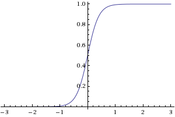

Continuous output in Neural Networks
How can I set Neural Networks so they accept and output a continuous range of values instead of a discrete ones? From what I recall from doing a Neural Network class a couple of years ago, the activation function would be a sigmoid, which yields a value between 0 and 1. If I want my neural network to yield a real valued scalar, what should I do? I thought maybe if I wanted a value between 0 and 10 I could just multiply the value by 10? What if I have negative values? Is this what people usually do or is there any other way? What about the input?
Thanks
Answer
Much of the work in the field of neuroevolution involves using neural networks with continuous inputs and outputs.
There are several common approaches:
-
One node per value
- Linear activation functions - as others have noted, you can use non-sigmoid activation functions on output nodes if you are concerned about the limited range of sigmoid functions. However, this can cause your output to become arbitrarily large, which can cause problems during training.
- Sigmoid activation functions - simply scaling sigmoid output (or shifting and scaling, if you want negative values) is a common approach in neuroevolution. However, it is worth making sure that your sigmoid function isn't too steep: a steep activation function means that the "useful" range of values is small, which forces network weights to be small. (This is mainly an issue with genetic algorithms, which use a fixed weight modification strategy that doesn't work well when small weights are desired.)

(source: natekohl.net)

(source: natekohl.net)
-
Multiple nodes per value - spreading a single continuous value over multiple nodes is a common strategy for representing continuous inputs. It has the benefit of providing more "features" for a network to play with, at the cost of increasing network size.
- Binning - spread a single input over multiple nodes (e.g. RBF networks, where each node is a basis function with a different center that will be partially activated by the input). You get some of the benefits of discrete inputs without losing a smooth representation.
- Binary representation - divide a single continuous value into 2N chunks, then feed that value into the network as a binary pattern to N nodes. This approach is compact, but kind of brittle and results in input that changes in a non-continuous manner.
Suggest
There are no rules which require the output ( * ) to be any particular function. In fact we typically need to add some arithmetic operations at the end of the function per-se implemented in a given node, in order to scale and otherwise coerce the output to a particular form.
The advantage of working with all-or-nothing outputs and/or 0.0 to 1.0 normalized output is that it makes things more easily tractable, and also avoid issues of overflowing and such.
( * ) "Output" can be understood here as either the ouptut a given node
(neuron) within the network or that of the network as a whole.
As indicated by Mark Bessey the input [to the network as a whole] and the
output [of the network] typically receive some filtering/conversion. As hinted
in this response and in Mark's comment, it may be preferable to have
normalized/standard nodes in the "hidden" layers of the network, and apply
some normalization/conversion/discretization as required for the input and/or
for the output of the network; Such practice is however only a matter of
practicality rather than an imperative requirement of Neural Networks in
general.